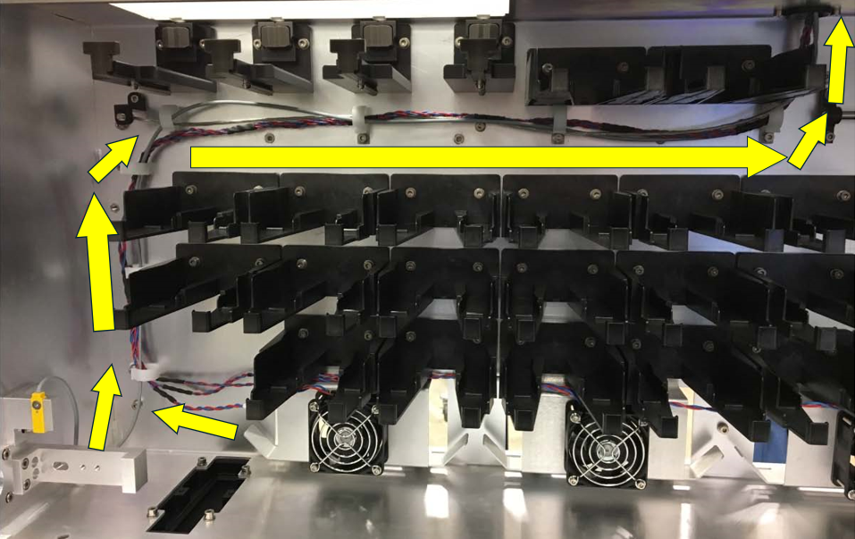
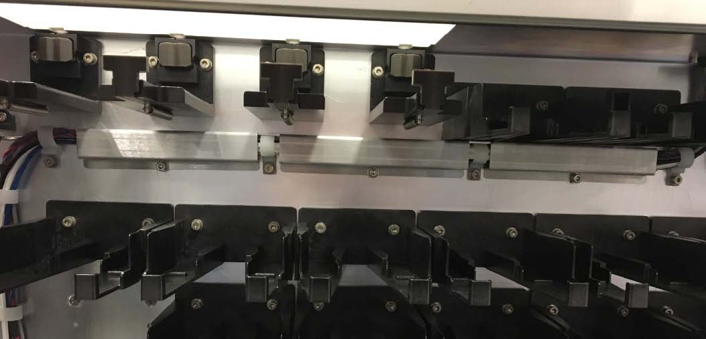
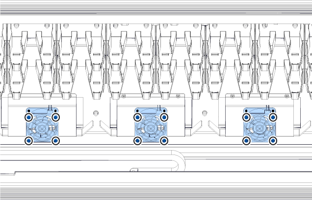
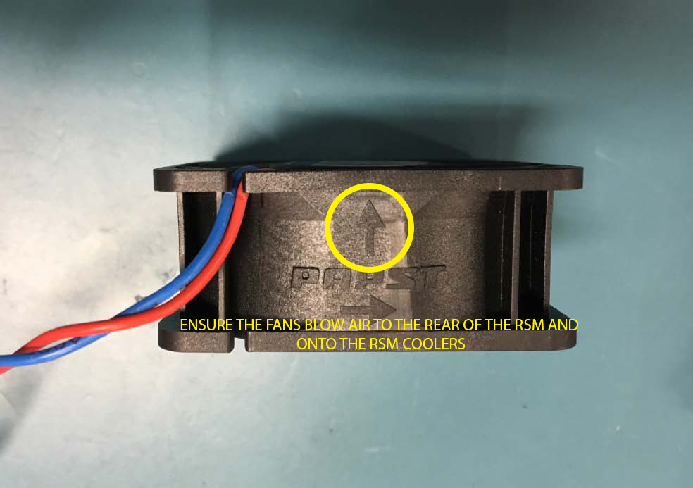
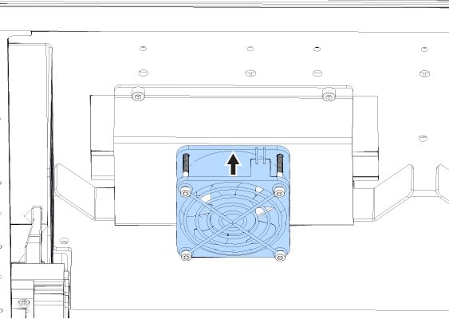

This topic includes information about how to replace the cooler fans in the reagent storage module (RSM).
Safety Reminder
Servicing the DxI 9000 instrument involves potential risks for pinch and puncture, electrical shock, and exposure to hazardous materials. You must mitigate these risks by taking appropriate countermeasures. See
Safety for more information.
Note: The fans are replaced as a set and are wired together - all three must be replaced at once. Orientation of the fans is critical, note the directional arrows on the fans and ensure they are pointing the correct direction.
Open the SPU.
Remove the front instrument panel to gain access to the front RSM cover, and remove the front RSM cover.
Note the orientation of the fans and routing of the cables, clockwise around the outer edge of the RSM up to the grommet at the top next to the reagent storage interface printed circuit board (PCB).

Following the fan cables out of the RSM through the grommet and up to the satellite power distribution PCB (W3) on the back of the sample pipettor gantry behind the substrate loader, disconnect the connector from the PCB.
Remove the cable from any J-clips/cable restraints between the PCB and the grommet where the cable exits the RSM.
Pull the cable gently from within the RSM until the connector has been pulled through the grommet and all cables now rest within the RSM.
Remove the three cable guides (metal sheaths - one screw each, 3mm driver) covering the RSM cables so that the fan cables can be removed from the bundle.
Note: The cable guides come out as one unit.

Remove the fan cables from the J-clips and cable bundle so they are free.
Remove the four screws each (2.5mm driver) securing the fans to the RSM chassis and remove the fan guards, fans, and cables from the RSM.
Figure 308: Reagent Storage Module Chassis Fans and Screws

Installing the Cooler Fans
Perform this procedure to install the cooler fans.
Fasten the fan guard and the fan to the RSM chassis and secure with four screws (2.5mm driver). Repeat for two additional fans.
Note: Ensure the fans are oriented correctly so that they blow air towards the rear of the RSM onto the RSM coolers (note the orientation arrow [yellow circle in the illustration below] on the top of the fans should be pointed towards the rear of the instrument).

Figure 309: Reagent Storage Module (RSM) Fan Orientation

Route the RSM fan cables clockwise around the outer edge of the RSM and secure in place with J-clips.
Route the RSM fan cable up and out of the grommet at the top right corner of the RSM.
Route the fan cable to the satellite power distribution PCB (W3) and secure with any J-clips/cable restraints between the PCB and the grommet where the cable exits the RSM.
Connect the RSM cable to the satellite power distribution PCB (J15).
Install the three cable guides (metal sheaths - one screw each, 3mm driver).